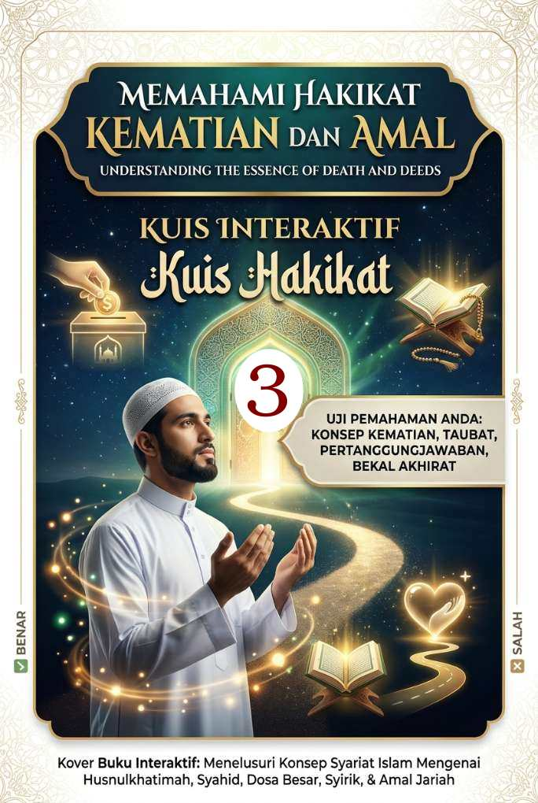

Memahami Hakikat Kematian dan Amal (3)
Kuis Interaktif · Bagian 3 dari 3
Bekal dan Amal yang Mengalir Setelah Mati
Bagian ketiga membahas bekal akhirat dan amal yang pahalanya terus mengalir.

Kuis Interaktif · Bagian 3 dari 3
Bekal dan Amal yang Mengalir Setelah Mati
Bagian ketiga membahas bekal akhirat dan amal yang pahalanya terus mengalir.
"Semua harta tidak bisa dibawa mati."
Harta yang disedekahkan atau diinfakkan di jalan Allah selama masa hidup sehat justru menjadi aset abadi yang mengalirkan pahala ke alam kubur.
Dalil (H.R. Ibnu Majah dari Abu Hurairah r.a.)
أَوْ صَدَقَةً أَخْرَجَهَا مِنْ مَالِهِ فِي صِحَّتِهِ وَحَيَاتِهِ يَلْحَقُهُ مِنْ بَعْدِ مَوْتِهِ
"...atau sedekah yang dibelanjakannya dari hartanya semasa hidupnya, akan sampai kepadanya sepeninggalnya."
"Sebaik-baik bekal untuk dibawa mati adalah sedekah."
Walaupun sedekah merupakan amalan istimewa, Al-Qur'an menegaskan bahwa sebaik-baik penunjang dan bekal mutlak di akhirat adalah ketakwaan.
Dalil (Q.S. Al-Baqarah [2]: 197)
وَتَزَوَّدُوا فَإِنَّ خَيْرَ الزَّادِ التَّقْوَى وَاتَّقُونِ يَا أُولِي الْأَلْبَابِ
"Berbekallah karena sesungguhnya sebaik-baik bekal adalah takwa. Bertakwalah kepada-Ku wahai orang-orang yang mempunyai akal sehat."
"Jika ingin mendapat balasan yang banyak dan berlipat, kerjakan amal saleh."
Allah berkomitmen memberikan balasan pahala terbaik serta kehidupan mulia bagi orang beriman laki-laki maupun perempuan yang beramal saleh.
Dalil (Q.S. Al-Nahl [16]: 97)
مَنْ عَمِلَ صَالِحًا مِنْ ذَكَرٍ أَوْ أُنْثَى وَهُوَ مُؤْمِنٌ فَلَنُحْيِيَنَّهُ حَيَاةً طَيِّبَةً وَلَنَجْزِيَنَّهُمْ أَجْرَهُمْ بِأَحْسَنِ مَا كَانُوا يَعْمَلُونَ
"Siapa yang mengerjakan kebajikan, baik laki-laki maupun perempuan, sedangkan dia seorang mukmin, sungguh, Kami pasti akan berikan kepadanya kehidupan yang baik..."
"Niat beribadah belum kesampaian karena mati, dapat pahala ibadah itu karena ditunaikan kerabatnya."
Utang ibadah atau nazar (seperti puasa atau haji) yang belum tuntas dikerjakan hingga wafat dapat digantikan penyelesaiannya oleh ahli waris.
Dalil (H.R. Al-Bukhari dari Ibnu Abbas r.a.)
حُجِّي عَنْهَا ۖ أَرَأَيْتِ لَوْ كَانَ عَلَى أُمِّكِ دَيْنٌ أَكُنْتِ قَاضِيَةً اقْضُوا اللهَ
"Hajikanlah dia (ibumu). Bagaimana menurutmu seandainya ibumu memiliki utang, apakah kamu akan melunasinya? Tunaikanlah hak Allah, sesungguhnya hak Allah lebih utama untuk ditunaikan."
"Pahala akan sampai ketika bersedekah atas nama orang yang telah mati."
Amalan sedekah yang diniatkan anak atau keluarga khusus untuk almarhum orang tuanya diakui syariat dan pahalanya mengalir kepada mayit.
Dalil (H.R. Al-Bukhari dari Aisyah r.a.)
فَهَلْ لَهَا أَجْرٌ إِنْ تَصَدَّقْتُ عَنْهَا قَالَ نَعَمْ
"Apakah ia akan memperoleh pahala bila aku bersedekah untuknya?" Beliau menjawab, "Ya."
"Segala kebaikan yang masih terus bermanfaat bagi orang lain, pahalanya akan mengalir walau sudah mati."
Amal jariah seperti menyebarkan ilmu, membangun fasilitas umum/masjid, atau meninggalkan anak saleh merupakan investasi pahala yang tidak terputus.
Dalil (H.R. Muslim dari Abu Hurairah r.a.)
إِذَا مَاتَ الإِنْسَانُ انْقَطَعَ عَنْهُ عَمَلُهُ إِلا مِنْ ثَلاثَةٍ إِلا مِنْ صَدَقَةٍ جَارِيَةٍ أَوْ عِلْمٍ يُنْتَفَعُ بِهِ أَوْ وَلَدٍ صَالِحٍ يَدْعُو لَهُ
"Apabila manusia mati, maka terputuslah amalnya kecuali tiga perkara, yaitu sedekah jariah, ilmu yang bermanfaat, dan anak saleh yang mendoakannya."
Alhamdulillah
Semoga kuis ini menambah pemahaman dan memperkuat iman kita semua.